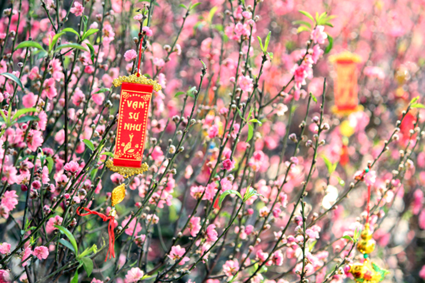
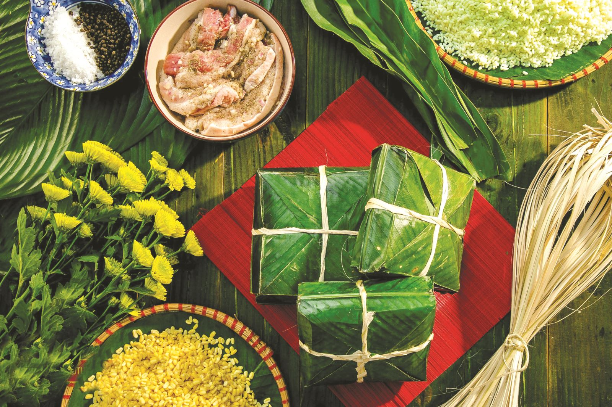
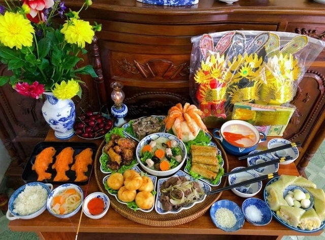
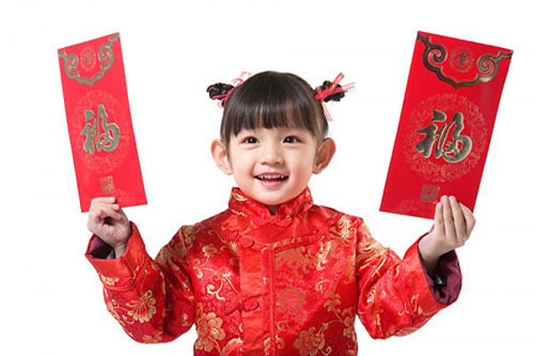
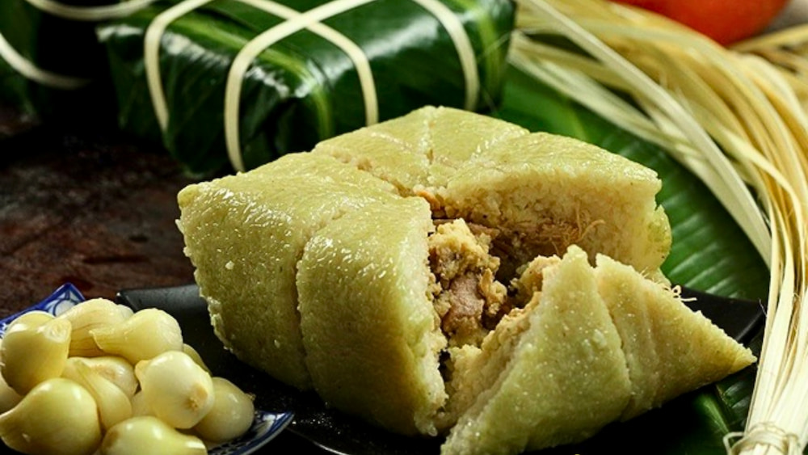
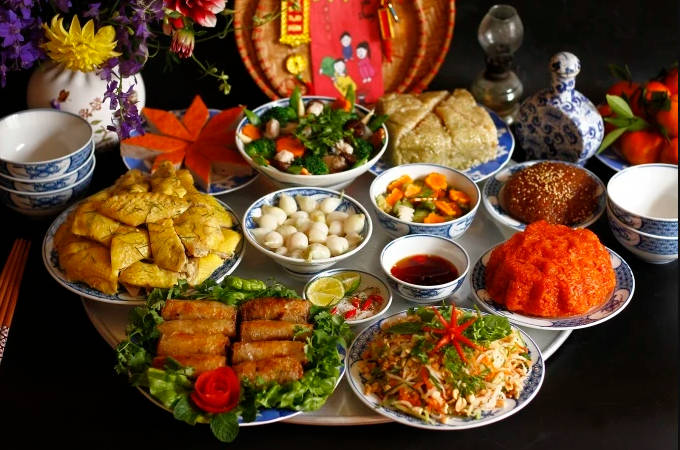
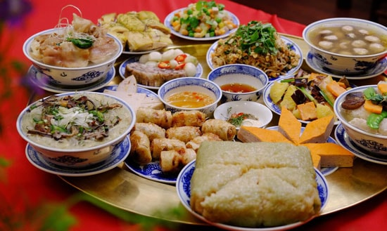
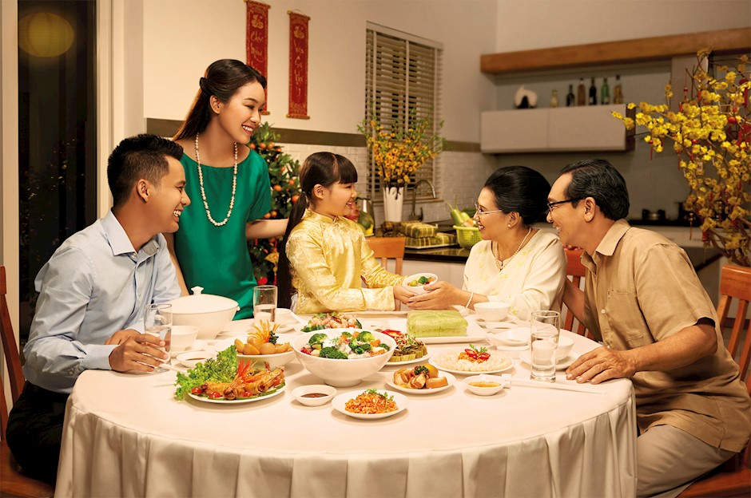
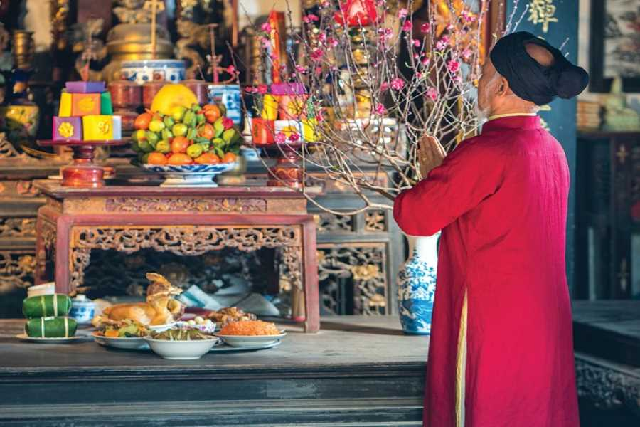
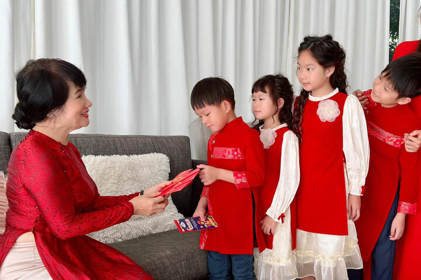

Giữ gìn bản sắc – Kết nối yêu thương

Tết Nguyên Đán, hay còn gọi là Tết Ta, là dịp lễ truyền thống quan trọng nhất của dân tộc Việt Nam. Tết diễn ra vào thời khắc giao thừa giữa năm cũ và năm mới theo âm lịch, đánh dấu sự khởi đầu của mùa xuân mới. Đây không chỉ là thời điểm chuyển giao giữa hai năm mà còn mang ý nghĩa sâu sắc về sự tái sinh của thiên nhiên, lòng biết ơn tổ tiên và niềm hy vọng vào một năm mới an khang, thịnh vượng. Từ bao đời nay, Tết đã trở thành biểu tượng của bản sắc văn hóa Việt, gắn kết các thế hệ và gìn giữ những giá trị tốt đẹp của dân tộc.

Bánh chưng tượng trưng cho đất, được gói từ gạo nếp, đậu xanh, thịt lợn và lá dong. Việc cả gia đình quây quần gói bánh chưng bên nồi bánh sôi sùng sục là nét đẹp văn hóa không thể thiếu trong những ngày cận Tết.

Vào ngày 23 tháng Chạp, các gia đình dọn dẹp bàn thờ và làm lễ cúng ông Công ông Táo chầu trời. Đây là phong tục thể hiện lòng thành kính với các vị thần bếp núc – những người chứng giám việc gia đình suốt cả năm.

Trong những ngày đầu năm, con cháu đến thăm hỏi, chúc Tết ông bà, cha mẹ và người thân. Người lớn tặng trẻ em phong bao lì xì đỏ với lời chúc may mắn, tượng trưng cho sự thịnh vượng và tài lộc trong năm mới.

Món ăn không thể thiếu trên mâm cỗ ngày Tết miền Bắc. Bánh chưng vuông vức, xanh mướt lá dong, tượng trưng cho đất và sự no đủ.

Thịt heo kho với trứng và nước dừa, vị béo ngậy, đậm đà. Món ăn phổ biến ở miền Nam, thường ăn kèm dưa giá và cơm trắng.

Hành muối chua giòn tan, ăn kèm bánh chưng giúp giải ngấy. Dưa hành là biểu tượng cho sự may mắn, xua tan điều xấu của năm cũ.

Dịp để mọi người sum họp, quây quần bên nhau sau một năm bận rộn, chia sẻ niềm vui và tình thân ấm áp.

Thể hiện đạo lý “uống nước nhớ nguồn”, lòng hiếu thảo với ông bà, cha mẹ qua việc dâng hương cúng tổ tiên.

Duy trì và truyền lại những phong tục đẹp đẽ cho thế hệ mai sau, giữ gìn bản sắc văn hóa Việt Nam trường tồn.
Video: Không khí Tết Nguyên Đán ấm áp, đoàn viên gia đình (Nguồn: YouTube)